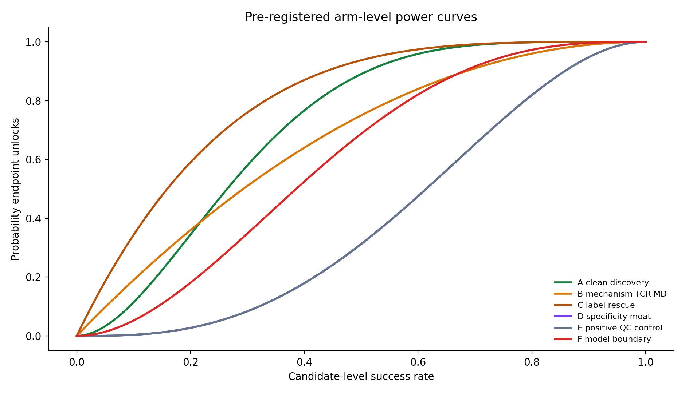
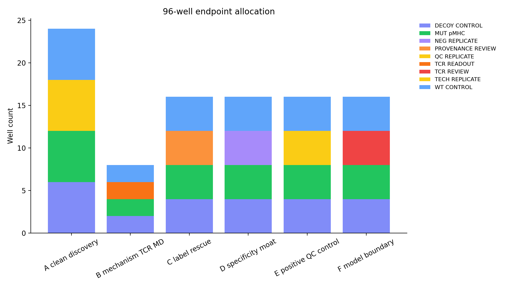
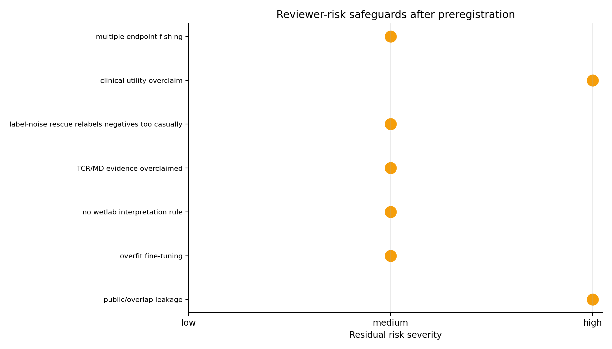

Decision
This is now pre-specified: if the plate succeeds, claim unlocks are already defined; if it fails, the downgrade path is also defined. Clinical selection remains locked.
Figures




Endpoint Plan
| plate_v4_arm | n_candidates | endpoint | preregistered_unlock_rule | confirmatory_unlock_rule | main_text_claim_tier | false_unlock_risk_under_null | confirmatory_false_unlock_risk_under_null | power_at_mean_prior | confirmatory_power_at_mean_prior | claim_layer_after_unlock | primary_risk |
|---|---|---|---|---|---|---|---|---|---|---|---|
| B_mechanism_TCR_MD | 2.000 | pMHC_binding_plus_TCR_readout | at least 1/2 candidates meet endpoint | at least 2/2 candidates meet endpoint | confirmatory_ready | 0.098 | 0.003 | 0.840 | 0.360 | orthogonal TCR/MD mechanistic support | TCR evidence is source/overlap diagnostic only |
| A_clean_discovery | 6.000 | mutant_pMHC_binding_with_WT_decoy_specificity | at least 2/6 candidates meet endpoint | at least 3/6 candidates meet endpoint | confirmatory_ready | 0.114 | 0.016 | 1.000 | 0.996 | wetlab-supported clean antigen discovery lane | false discovery from overfit clean score |
| C_label_rescue | 4.000 | provenance_resolved_positive_binding_rescue | at least 1/4 candidates meet endpoint | at least 2/4 candidates meet endpoint | confirmatory_ready | 0.185 | 0.014 | 0.999 | 0.979 | label-noise or assay-mismatch evidence | rescue case misread as relabeling without provenance |
| E_positive_QC_control | 4.000 | positive_control_assay_dynamic_range | at least 3/4 candidates meet endpoint | at least 3/4 candidates meet endpoint | confirmatory_ready | 0.027 | 0.027 | 0.881 | 0.881 | assay QC only | positive controls fail or nonspecific binding dominates |
| D_specificity_moat | 4.000 | hard_negative_remains_weak | at least 3/4 candidates meet endpoint | at least 4/4 candidates meet endpoint | confirmatory_with_caveat | 0.312 | 0.062 | 0.693 | 0.275 | specificity-aware control moat | hard negatives bind as often as positives |
| F_model_boundary | 4.000 | TCR_structure_disagreement_resolved | at least 2/4 candidates meet endpoint | at least 3/4 candidates meet endpoint | confirmatory_ready | 0.181 | 0.027 | 0.285 | 0.059 | model-boundary clarification | disagreement remains unresolved |
Result Template
| plate_v4_slot | plate_v4_arm | candidate_id | peptide | hla_allele_4digit | endpoint | preregistered_unlock_rule | confirmatory_unlock_rule | main_text_claim_tier | observed_candidate_success | predeclared_interpretation | claim_boundary_v3 |
|---|---|---|---|---|---|---|---|---|---|---|---|
| 1.000 | A_clean_discovery | CNV0_02448 | ILDKVLVHL | HLA-A*02:01 | mutant_pMHC_binding_with_WT_decoy_specificity | at least 2/6 candidates meet endpoint | at least 3/6 candidates meet endpoint | confirmatory_ready | wetlab-supported clean antigen discovery lane | clean BAR-Neo experiment priority; patient metadata still blocks clinical claim | |
| 2.000 | A_clean_discovery | CNV0_02708 | ALDPLLLRI | HLA-A*02:01 | mutant_pMHC_binding_with_WT_decoy_specificity | at least 2/6 candidates meet endpoint | at least 3/6 candidates meet endpoint | confirmatory_ready | wetlab-supported clean antigen discovery lane | clean BAR-Neo experiment priority; patient metadata still blocks clinical claim | |
| 3.000 | A_clean_discovery | CNV0_02709 | ALPVALPSL | HLA-A*02:01 | mutant_pMHC_binding_with_WT_decoy_specificity | at least 2/6 candidates meet endpoint | at least 3/6 candidates meet endpoint | confirmatory_ready | wetlab-supported clean antigen discovery lane | clean BAR-Neo experiment priority; patient metadata still blocks clinical claim | |
| 4.000 | A_clean_discovery | CNV0_02450 | KELEGILLL | HLA-B*44:03 | mutant_pMHC_binding_with_WT_decoy_specificity | at least 2/6 candidates meet endpoint | at least 3/6 candidates meet endpoint | confirmatory_ready | wetlab-supported clean antigen discovery lane | clean BAR-Neo experiment priority; patient metadata still blocks clinical claim | |
| 5.000 | A_clean_discovery | CNV0_02460 | GIVEGLITTV | HLA-A*02:01 | mutant_pMHC_binding_with_WT_decoy_specificity | at least 2/6 candidates meet endpoint | at least 3/6 candidates meet endpoint | confirmatory_ready | wetlab-supported clean antigen discovery lane | clean BAR-Neo experiment priority; patient metadata still blocks clinical claim | |
| 6.000 | A_clean_discovery | CNV0_02452 | LLDGFLATV | HLA-A*02:01 | mutant_pMHC_binding_with_WT_decoy_specificity | at least 2/6 candidates meet endpoint | at least 3/6 candidates meet endpoint | confirmatory_ready | wetlab-supported clean antigen discovery lane | clean BAR-Neo experiment priority; patient metadata still blocks clinical claim | |
| 7.000 | B_mechanism_TCR_MD | CNV0_01132 | GADGVGKSAL | HLA-C*08:02 | pMHC_binding_plus_TCR_readout | at least 1/2 candidates meet endpoint | at least 2/2 candidates meet endpoint | confirmatory_ready | orthogonal TCR/MD mechanistic support | TCR/MD diagnostic wetlab priority; not clean benchmark or clinical claim | |
| 8.000 | B_mechanism_TCR_MD | CNV0_01151 | HMTEVVRHC | HLA-A*02:01 | pMHC_binding_plus_TCR_readout | at least 1/2 candidates meet endpoint | at least 2/2 candidates meet endpoint | confirmatory_ready | orthogonal TCR/MD mechanistic support | TCR/MD diagnostic wetlab priority; not clean benchmark or clinical claim | |
| 9.000 | C_label_rescue | CNV0_00027 | GNNDVKEDP | HLA-C*07:02 | provenance_resolved_positive_binding_rescue | at least 1/4 candidates meet endpoint | at least 2/4 candidates meet endpoint | confirmatory_ready | label-noise or assay-mismatch evidence | rescue/audit case; could expose false-negative label or assay mismatch | |
| 10.000 | C_label_rescue | CNV0_00006 | VKEDPKWEF | HLA-C*07:02 | provenance_resolved_positive_binding_rescue | at least 1/4 candidates meet endpoint | at least 2/4 candidates meet endpoint | confirmatory_ready | label-noise or assay-mismatch evidence | rescue/audit case; could expose false-negative label or assay mismatch | |
| 11.000 | C_label_rescue | CNV0_00711 | RREPPHLARNF | HLA-C*07:02 | provenance_resolved_positive_binding_rescue | at least 1/4 candidates meet endpoint | at least 2/4 candidates meet endpoint | confirmatory_ready | label-noise or assay-mismatch evidence | rescue/audit case; could expose false-negative label or assay mismatch | |
| 12.000 | C_label_rescue | CNV0_00682 | NYRREPPHL | HLA-C*07:02 | provenance_resolved_positive_binding_rescue | at least 1/4 candidates meet endpoint | at least 2/4 candidates meet endpoint | confirmatory_ready | label-noise or assay-mismatch evidence | rescue/audit case; could expose false-negative label or assay mismatch | |
| 13.000 | D_specificity_moat | CNV0_02397 | LPIQYEPVL | HLA-B*35:03 | hard_negative_remains_weak | at least 3/4 candidates meet endpoint | at least 4/4 candidates meet endpoint | confirmatory_with_caveat | specificity-aware control moat | hard-negative or false-negative audit; use to sharpen specificity | |
| 14.000 | D_specificity_moat | CNV0_02400 | ETSKQVTRW | HLA-A*25:01 | hard_negative_remains_weak | at least 3/4 candidates meet endpoint | at least 4/4 candidates meet endpoint | confirmatory_with_caveat | specificity-aware control moat | hard-negative or false-negative audit; use to sharpen specificity | |
| 15.000 | D_specificity_moat | CNV0_02420 | KLANPLPYT | HLA-A*02:01 | hard_negative_remains_weak | at least 3/4 candidates meet endpoint | at least 4/4 candidates meet endpoint | confirmatory_with_caveat | specificity-aware control moat | hard-negative or false-negative audit; use to sharpen specificity | |
| 16.000 | D_specificity_moat | CNV0_02458 | IIGAGPAEV | HLA-A*02:01 | hard_negative_remains_weak | at least 3/4 candidates meet endpoint | at least 4/4 candidates meet endpoint | confirmatory_with_caveat | specificity-aware control moat | hard-negative or false-negative audit; use to sharpen specificity | |
| 17.000 | E_positive_QC_control | CNV0_02473 | KEFEDDIINW | HLA-B*44:03 | positive_control_assay_dynamic_range | at least 3/4 candidates meet endpoint | at least 3/4 candidates meet endpoint | confirmatory_ready | positive assay QC only; do not count as novelty evidence | positive assay control only; overlap/leakage blocks benchmark claim | |
| 18.000 | E_positive_QC_control | CNV0_00088 | YAYDNFGVLGL | HLA-C*03:03 | positive_control_assay_dynamic_range | at least 3/4 candidates meet endpoint | at least 3/4 candidates meet endpoint | confirmatory_ready | positive assay QC only; do not count as novelty evidence | positive assay control only; overlap/leakage blocks benchmark claim | |
| 19.000 | E_positive_QC_control | CNV0_00366 | QSPASLSSL | HLA-C*01:02 | positive_control_assay_dynamic_range | at least 3/4 candidates meet endpoint | at least 3/4 candidates meet endpoint | confirmatory_ready | positive assay QC only; do not count as novelty evidence | positive assay control only; overlap/leakage blocks benchmark claim | |
| 20.000 | E_positive_QC_control | CNV0_00374 | NYPGFLTIL | HLA-C*07:02 | positive_control_assay_dynamic_range | at least 3/4 candidates meet endpoint | at least 3/4 candidates meet endpoint | confirmatory_ready | positive assay QC only; do not count as novelty evidence | positive assay control only; overlap/leakage blocks benchmark claim | |
| 21.000 | F_model_boundary | CNV0_01023 | FLDEFMEGV | HLA-A*02:01 | TCR_structure_disagreement_resolved | at least 2/4 candidates meet endpoint | at least 3/4 candidates meet endpoint | confirmatory_ready | model-boundary clarification | TCR/structure disagreement audit; no positive claim until resolved | |
| 22.000 | F_model_boundary | CNV0_01251 | YLDELIRNT | HLA-A*02:01 | TCR_structure_disagreement_resolved | at least 2/4 candidates meet endpoint | at least 3/4 candidates meet endpoint | confirmatory_ready | model-boundary clarification | TCR/structure disagreement audit; no positive claim until resolved | |
| 23.000 | F_model_boundary | CNV0_01099 | FRSGLDSYV | HLA-C*06:02 | TCR_structure_disagreement_resolved | at least 2/4 candidates meet endpoint | at least 3/4 candidates meet endpoint | confirmatory_ready | model-boundary clarification | TCR/structure disagreement audit; no positive claim until resolved | |
| 24.000 | F_model_boundary | CNV0_01049 | LSSVSFFLV | HLA-A*11:01 | TCR_structure_disagreement_resolved | at least 2/4 candidates meet endpoint | at least 3/4 candidates meet endpoint | confirmatory_ready | model-boundary clarification | TCR/structure disagreement audit; no positive claim until resolved |
Claim Ladder v5
| ladder_step | claim_layer | current_status | v5_statistical_status | unlock_rule | claim_after_unlock | claim_boundary |
|---|---|---|---|---|---|---|
| 1.000 | computational score recovery | achieved | already verified | already generated and verified | validated computational prioritization layer | benchmark/prioritization only |
| 2.000 | clean antigen discovery | plate-ready | exploratory power 1.000, risk 0.114; confirmatory power 0.996, risk 0.016 | >=2 clean leads show mutant pMHC binding with WT/decoy specificity | wetlab-supported generalizable antigen discovery lane | no clinical vaccine-selection claim |
| 3.000 | TCR/MD mechanism | plate-ready | exploratory power 0.840, risk 0.098; confirmatory power 0.360, risk 0.003 | >=1 structural lead passes pMHC binding plus TCR tetramer/activation | orthogonal mechanistic support for candidate prioritization | not clean benchmark novelty because source overlap remains |
| 4.000 | label-noise rescue | audit-ready | exploratory power 0.999, risk 0.185; confirmatory power 0.979, risk 0.014 | >=1 rescue case passes provenance audit and pMHC binding | label-noise/assay-mismatch evidence explaining benchmark ceiling | do not relabel without provenance review |
| 5.000 | specificity moat | control-ready | exploratory power 0.693, risk 0.312; confirmatory power 0.275, risk 0.062 | hard negatives stay weak while positive controls pass | specificity-aware assay and model-boundary defense | assay control evidence, not patient outcome evidence |
| 6.000 | clinical/patient relevance | locked | locked; no assay endpoint unlocks this alone | complete patient context plus external/wetlab validation | patient-level prioritization hypothesis | clinical vaccine-selection claim remains unavailable now |
Reviewer Safeguards
| reviewer_risk | v5_safeguard | residual_risk | severity |
|---|---|---|---|
| public/overlap leakage | separate clean discovery from overlap-blocked positive controls | positive-control arm cannot support benchmark novelty | high |
| overfit fine-tuning | score booster selected only after source/HLA clean OOF; failed method-matrix stacker retained as negative diagnostic | small clean positive set n=35 | medium |
| no wetlab interpretation rule | binomial endpoint plan plus predeclared go/no-go thresholds | assay-specific thresholds still need lab calibration | medium |
| TCR/MD evidence overclaimed | TCR/MD arm unlocks mechanistic support only, not clean benchmark novelty or clinical claim | requires TCR readout or repeat MD to promote mechanism | medium |
| label-noise rescue relabels negatives too casually | rescue requires provenance audit plus pMHC binding | provenance may fail and rescue claim must be dropped | medium |
| clinical utility overclaim | clinical/patient layer remains locked in claim ladder | patient metadata and external validation still missing | high |
| multiple endpoint fishing | exploratory thresholds fixed; stricter confirmatory thresholds added; null-risk sums exploratory=0.918, confirmatory=0.149 | descriptive exploratory package; not a pivotal clinical trial | medium |